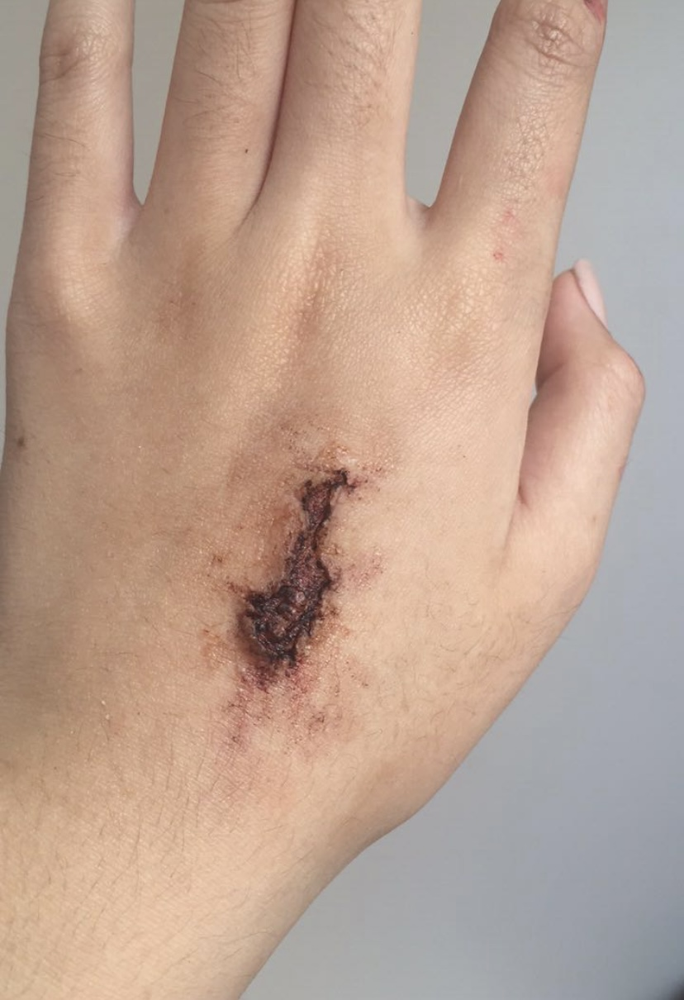
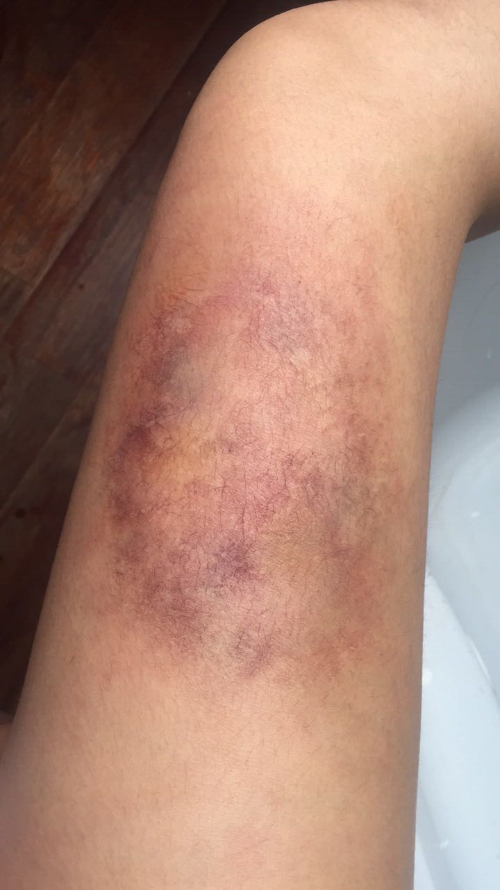
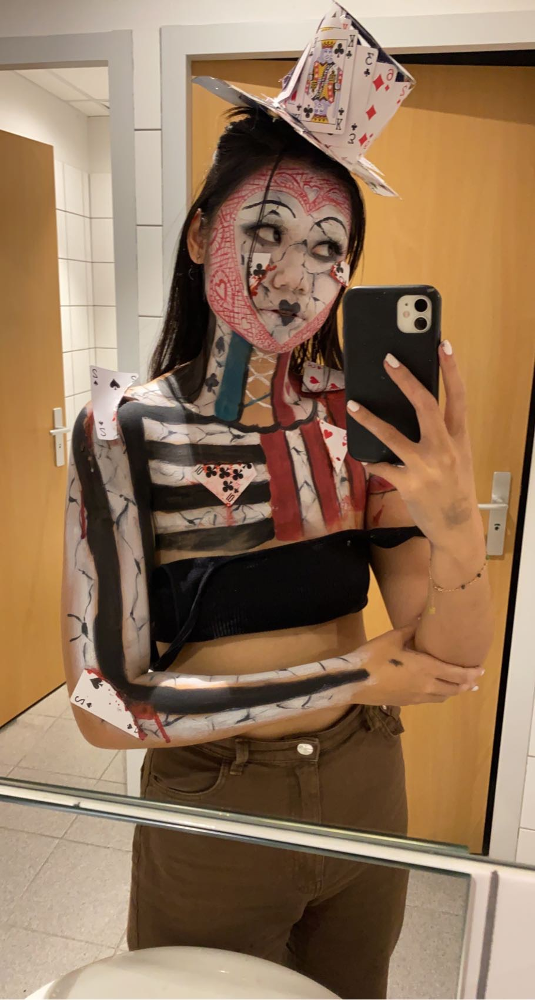
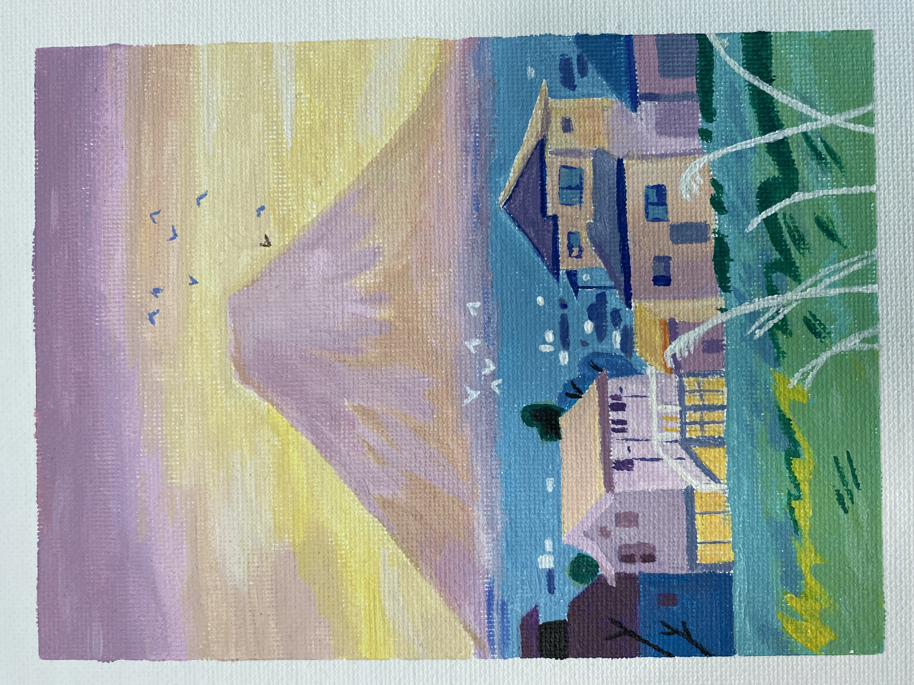
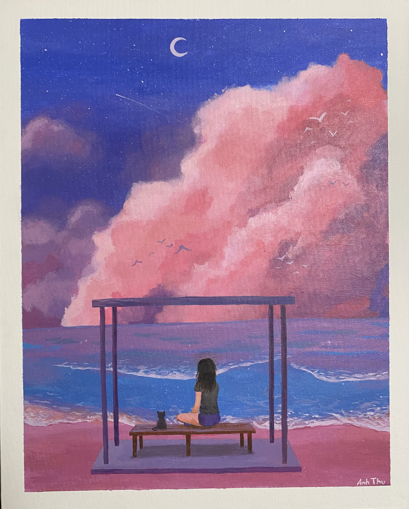
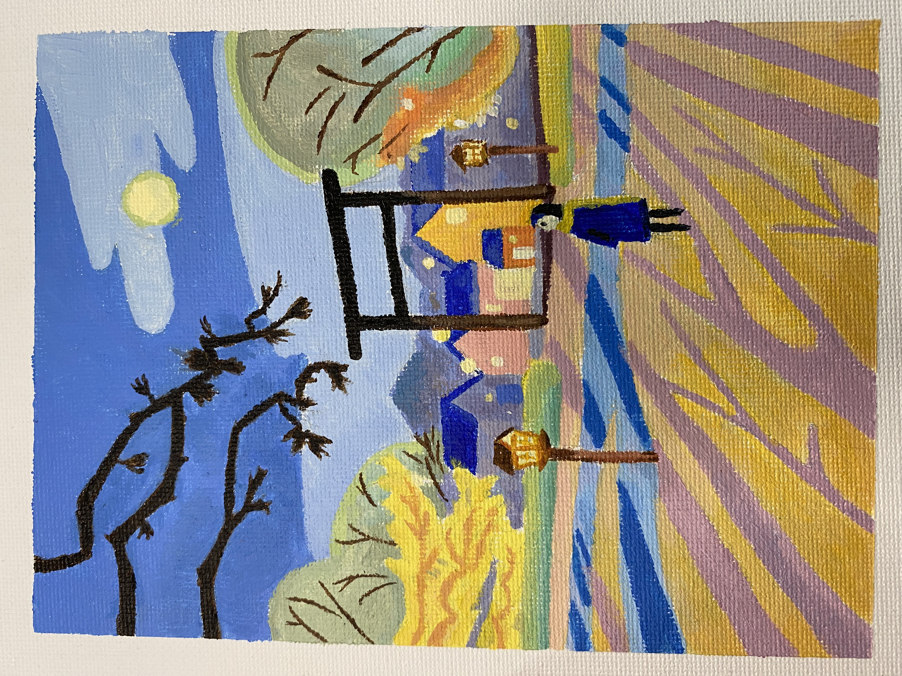

Salut, je m'apelle Anh-Thu Vu, j'ai 20 ans. Je suis une étudiante française à Audencia Business School, je suis à la recherche d'un stage long dans le secteur de la culture à partir de cet été 2022. Je vous laisse accéder à mon LinkedIn
Profil LinkedInDurant mon secondaire, j'ai décidé de faire un bac STMG avec une spécialité Gestion Finance au lycée Epin à Vitry sur Seine. Pendant ces deux années, j'ai énormément appris la gestion d'entreprise grâce aux différents projets de gestion et de création d'entreprise.
Suite à un bac mention Trés Bien avec les félicitations des jurys (18,5), je me suis dirigée vers une classe prépatoire au Lycée Turgot à Paris où la rigueur est le maître mot.
Après mes concours, j'intègre Audencia Business School à Nantes. N'étant qu'en première année, on voit les bases de la gestion en entreprise avant de faire des stages et se spécialiser
Trés grande passionnée de pop culture nipone, j'apprécie en particulier la lecture de Manga. D'ailleurs, mon magaka préféré est Isayama qui a notamment écrit l'Attaque des Titans. Une histoire riche en "foreshadowing" et en rebondisssment
Durant mes années en classe préparatoire, je me suis découverte une passion pour les escape game. Plus d'une vingtaine d'escape game dans le compteur. J'aime résoudre les enigmes et faire preuve de sagacité !
Les effets spéciaux dans le maquillage m'ont toujours facsinés depuis ma tendre enfance (Recréer des blessures, bleues avec des prothèses). J'exerce cette pratique depuis plus de 6 ans, autodidacte, c'est par les livres et vidéos que je me suis formée. Voici quelques exemples de blessures :
  Depuis plus de 10 ans, j'aime peindre des paysages à l'acrylique. C'est une activité apaisante et stimulante :
  Je souhaite travailler dans le domaine de la culture et occuper un poste à responsabilité, par exemple être Project Manager. Apres une année à Audencia, je voudrais trouver un stage dans une entreprise à l'international afin de découvrir de nouveau horizon et également me former !
L'un de mes plus grand rêve est de pouvoir faire le tour du monde notamment visiter les pays scandinaves. J'aimerais aussi passer une formation de saut en parachute afin de pouvoir sauter seule !